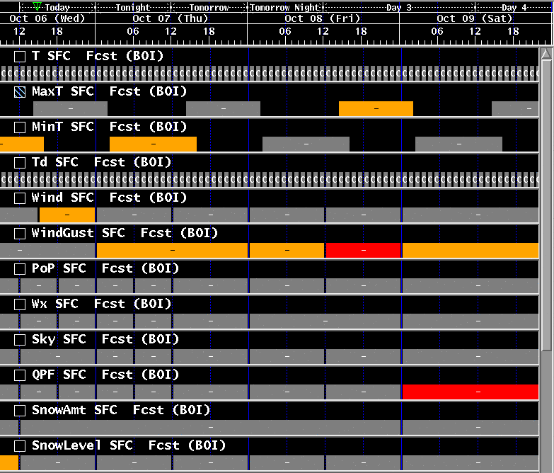
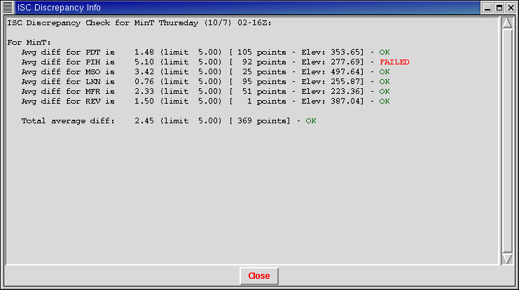
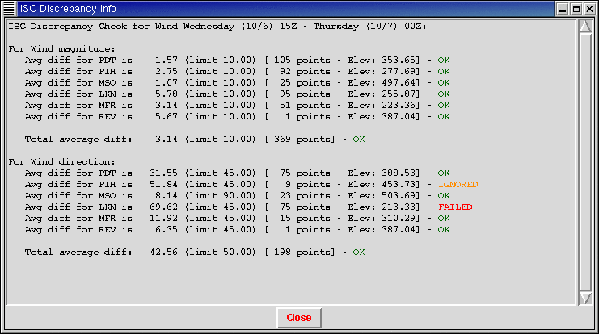
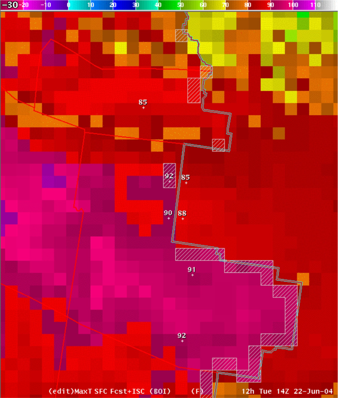
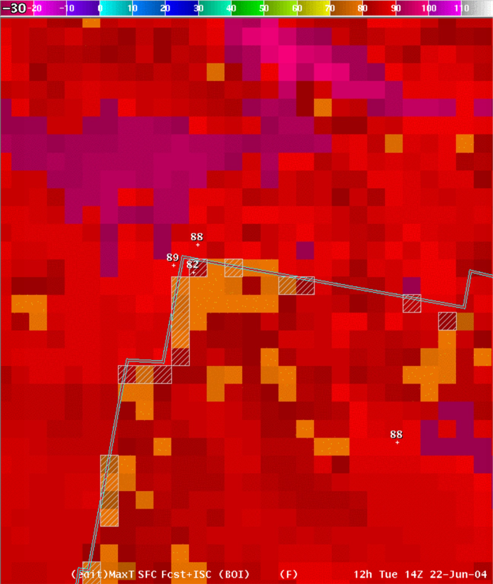
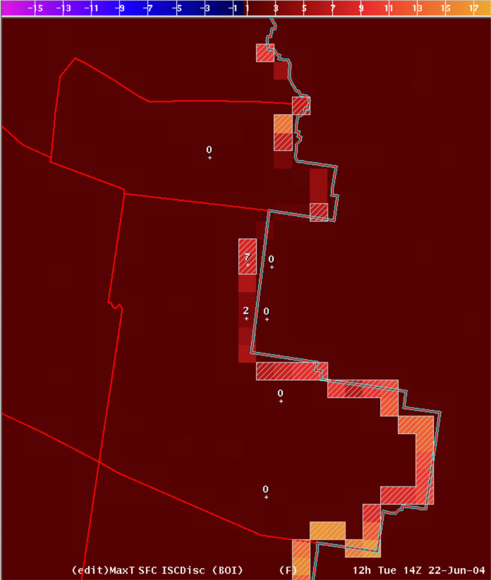
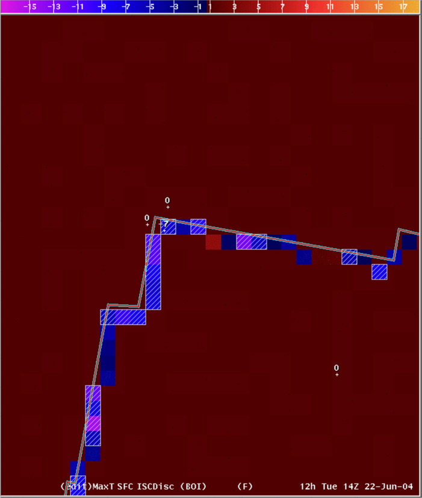

ShowISC Tools
A collection of tools to mitigate
site-to-site discrepancies
using algorithms similar to NDFD
Tim Barker - WFO Boise, ID
Table of Contents
Introduction
These tools are adaptations upon Tim Barker's
set of ShowISC tools. These tools were baselined in IFPS16.2
(November 2004). There are four tools:
- Show_ISC_Highlights, which
highlight grids in the Grid Manager that exceed thresholds on the ISC
borders,
- Show_ISC_Info, which displays the
statistics on each border of the CWA,
- Show_ISC_Area, which highlights
the set of grid points within your CWA that exceed the threshold, and
- Show_ISC_Grid, which creates a
difference grid showing the differences found.
Show_ISC_Highlights
The tool calculates "discrepant" in the same
way as
NDFD (see below for a description of the differences between the NDFD
algorithm and this algorithm). Essentially, the gridblock will turn
"red" if the error over any neighboring border would
violate the NDFD threshold, unless the border is a "short" border
(as defined in the configuration section - see below), in which
case it would turn the gridblock "orange". For example, if you
have five ISC neighbors and the average discrepancy along the border
with four of them is within the threshold, but the average
discrepancy for one of the borders violates the threshold - then
the gridblock will turn red. If it fails for only "short"
borders - it turns the gridblock red. When you run the tool on a
vector grid, it checks to see if there is a violation in either
the magnitude or the direction.
Here
is a picture of the grid manager after running the
Show_ISC_Highlights tool on several grids:

Some
gridblocks had partial failures and are orange, others had total
failure are are red. A message is also sent to the GFE status bar,
either stating that the grid "passed", or had "partial"
failure or completly "failed" the discrepancy check (green
messages for "passed" and "yellow" messages for partial and
failed).
Show_ISC_Info
This tool creates a table of discrepancy
information for
each neighboring border. If Show_ISC_Highlights flags a grid as
"discrepant", this tool can be very helpful for identifying which
border (or borders) violate the threshold, and by how much.
For
example, here is the window created by Show_ISC_Info for a particular
MinT grid.


For
each neighbor, it displays the average discrepancy magnitude, the
threshold for that border, the number of points in the average, and a
colored message of OK, FAILED or IGNORED. An average of the total
points along all the borders is also shown at the bottom. The
IGNORED message is used for borders where the discrepancy is larger
than the threshold, but the number of points along that border is so
low that the average is suspicious. This is one of the differences
from the NDFD algorithm, and is detailed below. By default, a border
must have 10 gridpoint pairs with a neighbor to be considered - but
this can be configured (see the configuration
section below).
For vector parameters like Wind, the
window will show you the statistics for both magnitude and
direction, like shown in this example:
You
can also configure the tool to check thresholds for several
parameters when you run the tool on certain grids. For example, the
default configuration is set up so that if you run the tool on an RH
grid, it will show you statistics for Temperature, Dewpoint, and
RH, since all three of these parameters are intimately related.
Show_ISC_Area
The tool sets the
edit area to the points inside your forecast area. This tool
is useful to simply highlight the particular gridboxes where you have
significant differences with your neighbors. Conceivably, you could
perform edit operations on these gridboxes to remove the
discrepancies. However, in practice, this is difficult to do because
different changes need to be made in different areas.
In
this example, the threshold in this area is 7 degrees, and gridboxes
have been added to the edit area when their difference exceeds 7
degrees. The forecast CWA is to the "left" in this example, with
the neighbors' ISC grid shown to the "right"

For
scalar grids like temperature, a gridbox is added to the edit area if
the maximum difference with any of its neighbors is above the
threshold. Normally, there is just a single neighboring point, so the
gridbox is added if the difference is above the threshold. However,
where there are "corners" in the edit areas, a gridbox inside
your forecast area might have two (or more) neighboring gridboxes
inside your neighbors area (for example, one north of your gridbox
and one west of your gridbox). In these cases, the tool finds the
maximum difference for any of the neighboring gridboxes, and adds the
gridbox to the edit area if that difference is greater than the
threshold.
An
example of a corner point is shown in the image below. The point
labelled 82 is inside the forecast area, and only has a 6 degree
difference with the point to the north (the threshold is 7 degrees in
this area). However, this point has a 7 degree difference with the
point to the west - so the tool added this point to the current
edit area.

For
vector grids like Wind, the tool will add a gridbox to the edit area
if it violates either the magnitude threshold or the direction
threshold.
Keep
in mind that you may have many gridpoints that exceed the threshold
along a border with your neighbor, but the average discrepancy
along the border is what is used to determine if that border is
"discrepant" or not. Thus, even though a border is not flagged
as "discrepant" by the other tools, you may still have many
points in the edit area created by Show_ISC_Area.
Show_ISC_Grid
The tool
sets the gridpoint inside your border equal to the maximum
difference
between that gridpoint and your neighbors gridpoints. The
Show_ISC_Area tool discussed above basically shows you where
you have differences above the threshold, while the grid calculated
by Show_ISC_Grid shows you how big the differences are.
Here
are example difference grids for the two areas shown above for the
Show_ISC_Area tool:


Note
that the differences are plotted for every point along the border,
not just the points that are larger than the coodination threshold.
Also note that the differences are positive when the gridpoint is
higher than the neighboring point, and the difference is negative
when the gridpoint is lower than the neighboring point.
Differences
with NDFD algorithm
As
of September 2004, the differences from the NDFD algorithm are:
In order to come up with the exact
same statistics the NDFD and GFE must agree EXACTLY on the location
of the border between two CWAs. Both NDFD and GFE determine if a
gridbox belongs to one CWA or another based on whether the center of
the gridbox lies on which "side" of the CWA border. To make
drawing operations more efficient, GFE 'thins' the points along
the shapefile borders by 'combining' points that are within a
certain 'precision' in terms of latitude and longitude. By
default, GFE sets this to 2 decimal places. For example, if two
points along the border have the same latitude, but have longitudes
of 105.243 and 105.238, they would be 'combined' into a single
point. While this makes almost no difference visually on the GFE
displays, it CAN have an impact when determining if the center of a
gridbox lies on which "side" of a shapefile border.
Using this higher precision, the location of the borders
is much closer to what is calculated with NDFD. However, even with
this high precision, roundoff errors lead to a few gridboxes placed
on different "sides" of the CWA border. If identical results are
desired, IFP focal points might need to override the ISC_xxx edit
areas to ensure that points are identically assigned as they are at
NDFD. Other differences between the NDFD calculations and the
calculations in these tools have been corrected - so the impact of
this difference is quite small, and for many borders is
non-existantant. For sites that run at a different resolution than
the 5-km resolution of NDFD, the border points will already be much
different - so this small difference is irrelevant.
The NDFD algorithm will mark a
particular border as "failing" (marked with a "frowny face")
whenever the average difference is above the threshold. The
algorithm used here ignores averages that have less than 10
gridboxes. This is to keep discrepancies along very short borders
from marking the whole grid as "suspicious". This value is
configurable in the Show_ISC_Highlights and Show_ISC_Info tools -
as discussed in the installation section below.
In order to ignore light wind
difference, in both the wind speed and wind direction calculations,
the NDFD algorithm also ignores neighboring gridbox pairs where
either wind speed value is below 8 knots. This means that your
gridbox can have 0 knots, and your neighboring gridbox can have 50
knots or more - and NDFD will not mark it as violating the
threshold! In the algorithm used here, neighboring gridbox pairs are
ignored only if BOTH points are below 8 knots.
Configuration
The ShowISC tools on the Smart Tool Repository required configuration
for each site. The baselined version are automatically configured
based on edit area information within EDEX.
The Show_ISC_Info and Show_ISC_Highlights tools have a common
configuration section within the ISC_Utility. You can override
these values by copying the configuration() function from ISC_Utility
and putting it into ISC_Utility_Local, and then changing the values.